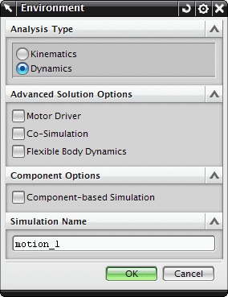

当您创建新的运动仿真时，您可以指定仿真是运动学或是动力学分析。

运动学运动仿真显示机构在一个运动循环中，所有部件相对于时间的物理位置。这种分析用于确定位移、速度、加速度以及约束上的反作用力值的范围。
在运动学仿真中：
不考虑重力与质量属性
外部载荷与内部力会影响约束上的反作用力，但不会影响运动
假设体和运动副都为刚体
不能使用衬套和接触
这种分析通常用于评估组件间运动的干涉，比如复杂机械系统的装配顺序。
|
|
将考虑重力和质量属性
外部载荷、力以及扭矩(线性与非线性)都可以生成运动
可以使用衬套来仿真柔性连接
可以使用接触和摩擦系数
可以使用柔性体动力学、电机控制以及 MATLAB Simulink 联合仿真
|
|